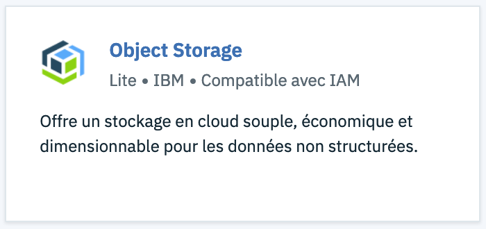
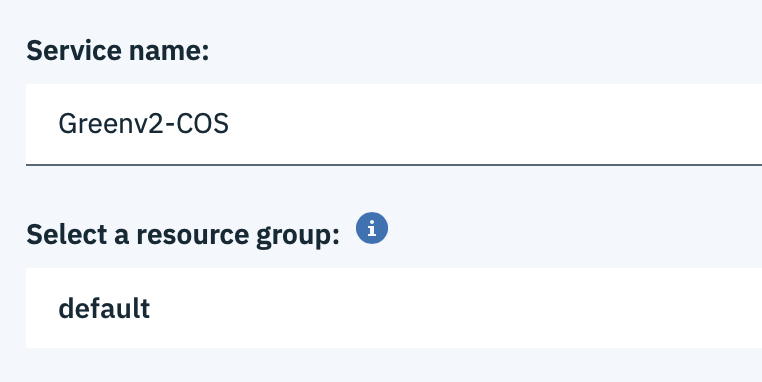
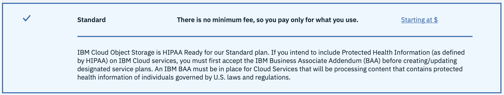
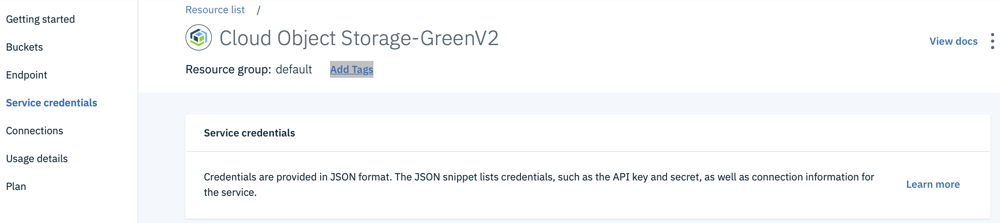
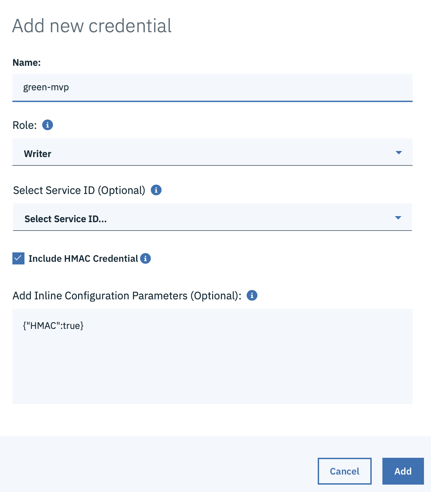
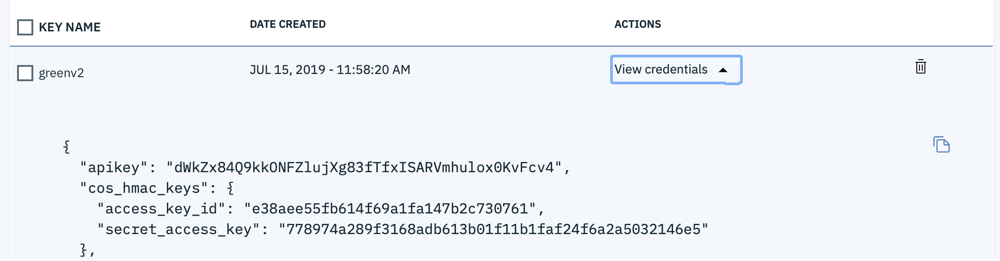
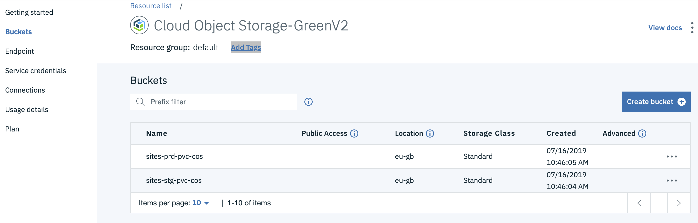
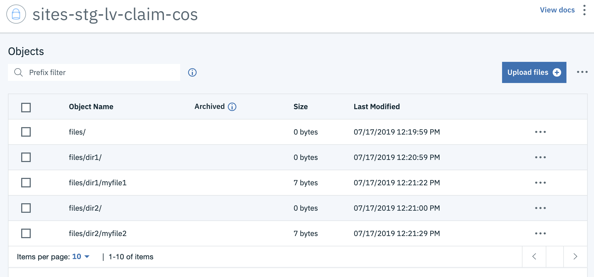

Drupal on IBM Cloud Object Storage
IKS integration with IBM Cloud Object Storage
Follow the instructions in this link to setup your IKS instance
This documentation will essential create all the needed storageClass in your IKS instance to address all kind of IBM Cloud Object Storage offerings. At the end of the procedure, you will have this :
kubernetes$ kubectl get storageClass
NAME PROVISIONER AGE
default ibm.io/ibmc-file 27d
ibmc-file-bronze (default) ibm.io/ibmc-file 27d
ibmc-file-custom ibm.io/ibmc-file 27d
ibmc-file-gold ibm.io/ibmc-file 27d
ibmc-file-retain-bronze ibm.io/ibmc-file 27d
ibmc-file-retain-custom ibm.io/ibmc-file 27d
ibmc-file-retain-gold ibm.io/ibmc-file 27d
ibmc-file-retain-silver ibm.io/ibmc-file 27d
ibmc-file-silver ibm.io/ibmc-file 27d
ibmc-s3fs-cold-cross-region ibm.io/ibmc-s3fs 23h
ibmc-s3fs-cold-regional ibm.io/ibmc-s3fs 23h
ibmc-s3fs-flex-cross-region ibm.io/ibmc-s3fs 23h
ibmc-s3fs-flex-perf-cross-region ibm.io/ibmc-s3fs 23h
ibmc-s3fs-flex-perf-regional ibm.io/ibmc-s3fs 23h
ibmc-s3fs-flex-regional ibm.io/ibmc-s3fs 23h
ibmc-s3fs-standard-cross-region ibm.io/ibmc-s3fs 23h
ibmc-s3fs-standard-perf-cross-region ibm.io/ibmc-s3fs 23h
ibmc-s3fs-standard-perf-regional ibm.io/ibmc-s3fs 23h
ibmc-s3fs-standard-regional ibm.io/ibmc-s3fs 23h
ibmc-s3fs-vault-cross-region ibm.io/ibmc-s3fs 23h
ibmc-s3fs-vault-regional ibm.io/ibmc-s3fs 23h
Focusing on ibmc-s3fs-XXXX-\<perf->YYYY storage classes only :
XXXX : standard, vault, cold, flex are the four IBM COS storage offering.
- standard : this option should be used when few data are stored especially for development environment or even for some AI usage when the overall data is read many times.
- cold : this option should be used when few data reads occurred (actually less than 14% of total storage per month) especially for archives or backups.
- vault : is a trade-off between standard and cold (more than 14% and less than 100% of total storage reads per month)
- flex : this option should be used when the client do not know how its data are used, the costs are eventually capped if necessary
Optional perf value means the usage of IBM Aspera to boost your data transfer. This is especially efficient on bad public network.
YYYY : cross-region, regional determined the resiliency of the data, cross-region is at the regional failure level, regional is at the Availability Zone failure level.
-
cross-region : give the ability for all of our custumers to retrieve a hundred percent of their data even of any regional breakdown (even if a whole region is burnt to the ground). In Europe, IBM Cloud Object Storage Cross Region offering is spread into Amsterdam, Francfort and Milan datacenters.
-
regional : give the ability for all of our custumers to retrieve a hundred percent of their data even of any availability zone breakdown (even if a whole region is burnt to the ground). In Europe, IBM Cloud Object Storage Regional offering is either London or Francfort MZR (Multi-Zone Region).
These storage classes may be used in your kubernetes instance Persistence Volume Claim (PVC), you don't need to create a Persistance Volume, this latter is automatically created when a PVC of these ibmc-s3fs-XXXX-YYYY types are created. When deleting a PVC, the PV is also deleted automatically as well.
IBM Cloud Object Storage usage in Drupal container
Kubernetes secret to connect to IBM Cloud account
Before creating your kubernetes PVC, you need to create a kubernete secret, so that the ibmc-s3fs-XXXX-YYYY storage class driver is able to connect to the right IBM Cloud account. You may use either a combination of (API Key + COS ID instance) or the standard S3 combination (access key id + secret access key). The first one allows you to have more control on privileges because it is based on IAM.
Here is an exemple of the kubectl command to create the secret based on the standard S3 combination :
kubectl create secret generic <secret_name> --type=ibm/ibmc-s3fs --from-literal=access-key=<access_key_id> --from-literal=secret-key=<secret_access_key>
- secret_name : specify a secret name
- access_key_id : provide the hmac access_key_id value
- secret_access_key : provide the hmac secret_access_key value
How to get those details from IBM COS ?
Create your IBM Cloud Object Storage instance
Search in the IBM Cloud catalog this item and click on it.

Provide a name, a resource group, choose the standard plan and click on create
 
Go to Service credentials and click on new credential

Provide a name, choose writer role, tick on Include HMAC credential {"HMAC":true} appears in the optional parameters pane, then click add

Click on View credentials

You may now copied either the apikey or the couple access_key_id/secret_access_key. In our example above, we use this latter.
Kubernetes ClusterRole for IBM Cloud Object Storage Driver
You need to create a Kubernetes ClusterRole named ibmcloud-object-storage-secret-reader including your secret Here is the yaml file needed :
kind: ClusterRole
apiVersion: rbac.authorization.k8s.io/v1beta1
metadata:
name: ibmcloud-object-storage-secret-reader
rules:
- apiGroups: [""]
resources: ["secrets"]
resourceNames: ["<secret_name>"]
verbs: ["get"]
Put your secret name in the resourceNames, you may put a list of secret names if needed.
Create a Kubernetes PVC
You may now be able to create a Kubernetes PVC based on IBM Cloud Object Storage bucket. Use the following yaml file to create your Kubernetes PVC :
---
apiVersion: v1
kind: PersistentVolumeClaim
metadata:
name: <pvc name>
annotations:
ibm.io/auto-create-bucket: "true"
ibm.io/auto-delete-bucket: "false"
ibm.io/bucket: "<bucket name>"
ibm.io/secret-name: "<secret name>"
ibm.io/endpoint: "https://s3.private.eu-gb.cloud-object-storage.appdomain.cloud"
spec:
accessModes:
- ReadWriteMany
storageClassName: ibmc-s3fs-standard-regional
resources:
requests:
storage: 100Gi # could be any number
- pvc name: provide your Kubernetes PVC name here in order to claim it in a pod
- bucket name: provide a bucket name, this bucket will appear in your IBM Cloud COS instance. Choose a long name because it has to be unique within all the existing bucket of the same region (including all other client buckets)
- secret name : provide your secret name you created before.
Notice that the size of the storage is compulsory but its value has no sense, as the IBM Cloud COS bucket has no volume limitation.
FI : a bucket may have up to 2^128 objects and an object may be up to 10 TB size.
You may check your IBM Cloud COS PVC
kubernetes$ kubectl get pvc | grep ibmc-s3fs
sites-prd-pvc-cos Bound pvc-24323d88-a7a6-11e9-9ed4-6657bd2680ff 100Gi RWX ibmc-s3fs-standard-regional 23h
sites-stg-pvc-cos Bound pvc-24298a3a-a7a6-11e9-9ed4-6657bd2680ff 100Gi RWX ibmc-s3fs-standard-regional 23h
Use your Kubernetes PVC in your Kubernetes Drupal pod
Specify a mount path in your pod spec:
volumeMounts:
- mountPath: /var/www/drupal/web/sites/default
name: sites-cos-storage
readOnly: false
And specify you PVC name
volumes:
- name: sites-cos-storage
persistentVolumeClaim:
claimName: <pvc name>
Actually, the Drupal container try at startup to change the owner of the /var/www/drupal/web/sites/default/files directory. thus the files sub directory should exist before this action, otherwise the container will fail. You need then to initiate an initContainer who mount the same directory and create the files sub directory in the event this one do not exist.
initContainers:
- image: "uk.icr.io/greenv2-ns/code-php-fpm:latest"
volumeMounts:
- mountPath: /var/www/drupal/web/sites/default
name: sites-cos-storage
readOnly: false
name: create-files
command: [ "sh", "-c", "mkdir -p /var/www/drupal/web/sites/default/files" ]
securityContext:
runAsUser: 0
Then any file or diretory created in the /var/www/drupal/web/sites/default sub directory will create an object in the specified IBM COS bucket
Here is an example of two PVC created which trigger the create of two buckets:

The following example shows how COS is organized via the ibmc-s3fs driver:
root@php-fpm-stg-d5bb47bfb-j6hqk:/var/www/drupal/web/sites/default# ls -lR
.:
total 1
drwxrwxrwx 1 www-data www-data 0 Jul 17 10:19 files
./files:
total 1
drwxr-xr-x 1 root root 0 Jul 17 10:20 dir1
drwxr-xr-x 1 root root 0 Jul 17 10:21 dir2
./files/dir1:
total 1
-rw-r--r-- 1 root root 7 Jul 17 10:21 myfile1
./files/dir2:
total 1
-rw-r--r-- 1 root root 7 Jul 17 10:21 myfile2
Each directory (files, dir1, dir2) has an entry in the bucket
Each file (myfile1, myfile2) has also an entry in the bucket
